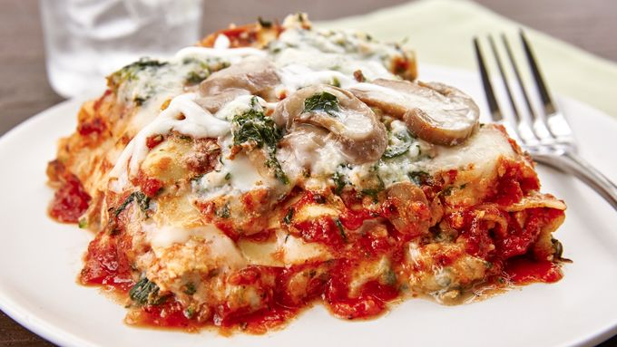

Vegetarian Lasagna

Description
Going meatless doesn't mean giving up flavor with this layered lasagna, filled with vegetables and three kinds of cheese.
Ingredients
- 2 cups of Tomato Basil Pasta Sauce
- 1 medium zucchini, shredded (1 cup)
- 1 (12-oz.) container (1 1/2 cups) low-fat cottage cheese
- 1 9-oz.) pkg. frozen spinach, thawed, squeezed to drain well
- 1/3 cup grated Parmesan cheese
- 2 tablespoons chopped fresh oregano
- 8 oven-ready lasagna noodles (each about 7x3 inches)
- 1 (4-oz.) can mushroom pieces and stems, drained
- 8 oz. (2 cups) shredded mozzarella cheese
Steps
- Spray 12x10-inch sheet of foil with nonstick cooking spray. In medium bowl, combine pasta sauce and zucchini; mix well. In another medium bowl, combine cottage cheese, spinach, Parmesan cheese and oregano; mix well.
- Spread 1/4 cup sauce mixture in ungreased 8-inch square (2-quart) glass baking dish. Top with 2 lasagna noodles. Spread about 1/2 cup sauce mixture over noodles. Drop 1/2 cup of spinach mixture by small spoonfuls over sauce mixture; spread carefully. Sprinkle with 1/4 of mushrooms and 1/2 cup of the mozzarella cheese.
- Repeat layers 3 more times, beginning with noodles. Cover with foil, sprayed side down; refrigerate at least 8 hours or overnight.
- Heat oven to 400°F. Bake covered for 45 minutes.
- Uncover baking dish; bake an additional 10 minutes or until lasagna is bubbly around edges. Let stand 10 minutes before serving.